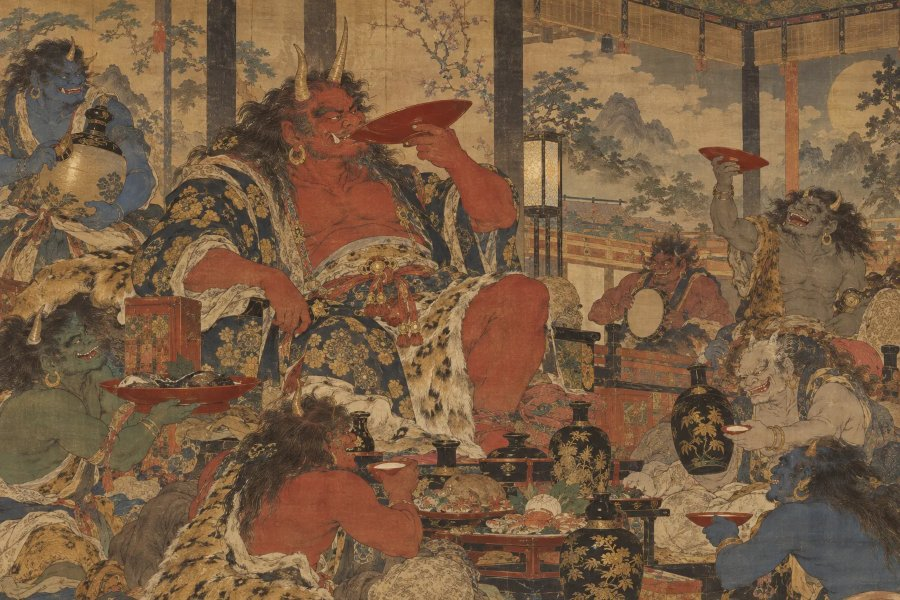

日本の伝承・鬼
酒呑童子
「大江山に君臨した鬼の頭領」
⛩️ あなたの正体も診断する（無料）本質
大江山を根城に多くの鬼を従えた鬼の頭領。酒好きで知られ、源頼光と四天王によって退治されたと伝わります。強烈なカリスマで仲間を率いる人です。
- ✨ 長所
- 人を惹きつけてまとめるカリスマ性があります。宴やにぎやかな場を盛り上げるのも得意です。
- ⚠️ 短所
- 楽しいことに夢中になると、油断しがち。お酒の席では特に注意。
- 💞 恋愛・人間関係
- 豪快で人懐っこい恋人。にぎやかな付き合いを楽しみます。
- 💼 仕事・才能
- リーダー、飲食業、エンタメ、仲間を率いる仕事に向いています。
📍 ゆかりの地：大江山（京都府福知山市）